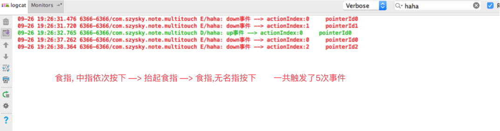
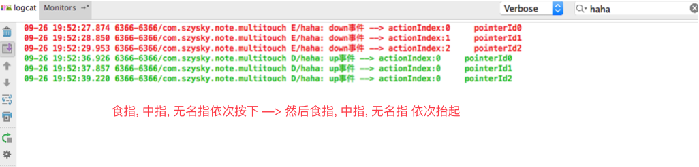

阅读《Android 编程实战》一书的抄书笔记 –> 对应书籍第五,六章
设计自定义视图
View的声明周期
View也有自己的声明周期. 该生命周期并不直接和展示它的Fragment或者Activity相连, 相反它和显示它的窗口状态以及渲染循环相关
当视图被添加到View层级结构中时, 第一个被回调的函数是View.onAttachedToWindow(), 这标志着它现在可以加载所需的资源了. 构建自定义视图时, 开发者应该重载该方法, 并在该方法中加载所有资源并初始化视图所需的依赖. 基本上所有的耗时的初始化都应该放在这个方法内.
还要一个匹配的回调名为View.onDetachedFromWindow(), 从View层次结构中移除视图时调用这个方法. 在这里需要关注的是需要显示清理的操作, 比如所有被加载的资源, 启动的Service, 或者其他依赖.
视图被添加到View层次结构中之后, 它会经过一个循环, 该循环首先计算动画, 接下来会一次回调View.onMeasure(), View.onLayout(), View.onDraw()等方法.
多点触控
先看下图效果:

贴一下实现的主要代码:
|
以上是伪代码, 如果想需要完整类,点击此链接到github查看
这里在进行解释说明一下:
每次时间发生改变的时候onTouchEvent(MotionEvent)都会被回调. 并且MotionEvent会保存当前时间点的所有触摸点的事件.
举例一个场景: 当三个手指同时按下
首先系统内部有一个保存当前多点触摸事件的集合,由于跟进源码后发现方法调用的是本地方法,所以只能从出现的规律可以反推出这个集合应该是一个队列.从以下结果也可以看出.
虽然三个手指同时按下, 但是会依次触发onTouchEvent()回调. 也就是说会走三遍此回调. 当第一个触摸事件发生down时. 系统会创建保存一个事件对象并给这个对象的pointerID赋一个0的值并放到队列的首部, 这时当多点触控的第二个触摸事件按下的时候. 系统会遍历队列中的触摸事件的pointerID,如果队列第一个对象的pointerID不等于0那么就插入在这个对象的头部,如果等于继续下一个元素,如果下一个对象的pointerID为1(就是顺序递增的效果)那就继续遍历下一个元素,如果不是那就插入到这个元素也就是第二个元素对象的首部, 依次类推. 当插入后, 插入元素的所在队列的位置当做第二个触控点事件的pointerID; 当第三个多点触控发生时, 还是会重复上面的插入规则, 这个时候会遍历到已经存在的两个触摸对象其pointerID是从0开始的递增,所以这个触摸事件放到这个队列的尾部, 也就是第三个触控事件的pointerID=3. 这也就是同一个时间段,不会存在相同的pointerID的原因
为什么要这么麻烦的说这个? 因为当多点触控的时候不弄仅通过getX()或者getY()来取得最后一个坐标点,这个方法只是返回这个队列中的第一个元素的坐标点, 而处理多点的时候我们应该知道具体是队列总的哪一个事件触发并获取其值需要getActionIndex()获得触发事件对象的位置,然后通过getX(actionIndex)才能获取真正的发生变化的触摸点, 而且我们自己在本地记录的出现过得Path路径轨迹进行存储整理. 所以我们需要一个唯一标示来区分不同的触控点进行后续的操作

而获取这个触控的事件的队列虽然在插入的时候会保证返回的所在队列的位置和其pointerID一致, 但是在连续抬起事件队列删除的元素时候有序队列元素的位置会变化, 就会导致这两个值有所不同, 请看下图

上图和实现代码中有一个getActionIndex()获得的ActionIndex的int值.这个值表示触发事件对象所在系统保存的所有还在运行的事件的队列的位置. 当我们知道是一个队列的时候规律也就不难推出move事件的时候, 此值不会发生改变. 但是当down和up事件的时候会动态变化. 因为队列前面元素的变化会导致后边的元素.
这里可能我说的有点啰嗦, 如果看不懂解释可以去上面的连接地址down下代码, 观察输出日志即可.
Android中的MotionEvent类是所有pointer相关的操作的核心类, pointer意味着手指, 手写笔, 电脑鼠标或者一个外部的触摸板.
PointerCoordinates
这个知识点只做了解, 因为关于触摸压力值并不是真正的支持, 有的是由按下面积和或者获得的值就是恒定的.
MotionEvent对象包含pointer的所有信息. 不同类型的的输入设备, 手指, 鼠标等都能生成pointer, 所以MotionEvent不仅包含x,y坐标. Android API支持所有Linux内核定义的输入设备. 因为不同设备的输入参数可能不同, 所以pointer被设计成有多个坐标轴. 最常用的就是坐标轴xy. 但也有描述其他信息的坐标轴, 比如压力, 距离, 方向等.
另外MotionEvent类不仅支持生成pointer坐标的输入设备, 还支持游戏控制相关的坐标轴信息以及诸如节流阀, 方向舵, 倾斜, 滚轮之类的输入来源.
旋转手势
Android API中有两个工具类能帮助开发者检测各种手势, GestureDetector类和ScaleGestureDetector类. 第一个类支持一些简单的触控手势: 比如长按, 双击, 快速滑动. 第二个类能检测类似于地图所用的双指缩放手势, 以及图片的放大手势等.
类似这样的效果:

代码就不贴了, 有兴趣类链接地址
OpenGL ES
虽然可以使用SDK提供的部件, 或者使用自定义的视图来构建大部分的Android应用, 但有时需要更底层和更高性能的图形API. 主要用于游戏. OpenGL ES(嵌入式子系统)很适合. Android系统最高支持OpenGL ES 3.0版本主要取决于硬件和android版本. Android 4.3支持最新的3.0标准.
Android已经在标准UI框架中使用OpenGL ES 2.0来启动硬件加速, 但是并没有对开发者开放. 而3.0完全向后兼容2.0的. 所以如果使用3.0可以放心使用.
如果想要了解Android上的OpenGl, 可以在官网,这里跳转到Google介绍openGL
重识Service
何时并如何使用Service
Android文档关于Service组件的描述如下:
Service组件表示在不影响用户的情况下执行耗时的操作或者提供给其他应用使用的功能.
即使使用Service还是需要把耗时的任务放到一个独立的线程中, 那为什么还有服务的出现?
因为Service和Activity有着不同的生命周期, 对比起来Service更适合管理耗时的操作.
那么耗时操作的定义, 其实建议把所有和用户界面无关的操作都放到后台线程去执行. 因为UI线程需要保持高度响应来与用户进行交互. 所以应尽可能排除掉一切可以不影响用户界面响应速度的操作.
Service类型
- 用来执行和用户输入无关的操作. 例如音乐播放器能够在用户从前台退出应用的情况下还能继续播放音乐. 或者例如即时通讯应用, 在用户退出前它要一直保持运行并接收消息.
- 直接由用户触发 比如照片共享应用, 用户拍完照后, 应用使用
Intent把照片发送给Service(更准确地说是使用指向本地的Uri). 接下来Service启动并解析Intent里的数据, 最后在后台线程中上传该照片. 当操作完成后系统会自动停止Service.
Service的创建和销毁
service有两个必定会调用的生命回调周期onCreate()和onDestroy()
onCreate():做一些初始化例如初始化新的Handler对象, 获取系统服务, 注册广播, 以及执行service操作需要的其他初始化工作. 请注意这个生命周期可是运行主线程的,如果要执行耗时操作需要使用AsyncTask,Handler等方法onDestroy():所有的清理工作都应该在onDestroy()方法完成, 特别的, 需要停止所有已经启动的HandlerThread对象, 并且注销之前注册的广播. 同样, 此回调也是运行在主线程中, 所以清理工作同样放在单独线程.
启动Service
Service的启动方式有两种: 通过Content.startService()或者Content.bindService().
这里先说startService()方法:
当以启动模式打开Service时, 参数中的Intent必须匹配Service定义的intent-filter. (也可以显示地使用Service的ComponentName而不再定义intent-filter). 该方法不提供任何对Service()的引用, 但它在执行基于消息的触发操作方面很有用. 该方法适合执行由用户触发并且运行时间不确定的操作, 比如上传照片或者向服务器发送状态更新. 它在为其他应用提供简单的接口方便也很有用.
当时用启动模式打开服务的时候, Service#onStartCommand()方法会被调用, 并收到发送给Service的Intent. 该方法返回一个整型常量, 用来告诉系统如何处理Service的重启操作. 这是Service比较复杂的部分, 所以最起码要记住以下三种返回值(真正返回不止3种):
START_STICKY:代表当系统由于某些原因关闭Service时(通常是由于内存不足).Service会被重新启动. 然而当系统重新启动Service时,onStartCommand()参数中的Intent会被置为null, 请注意这一点. 使用START_STICKY返回值的一个典型例子就是音乐播放器.START_NOT_STICKY:表示Service不会再系统关闭之后重新启动. 这在使用Service执行一次性操作的时候特别有用, 比如上传的东西到服务器. 如果Service在完成任务前就被系统关闭了, 它不应该再尝试重复之前的操作.START_REDELIVER_INTENT:它和START_STICKY基本一样, 不过当系统重启Service时,onStartCommand()会收到Service被销毁之前接收到的最后一个intent.
接着说onStartCommand()这个回调方法的一共有三个返回值:
intent:根据前面讲解返回值的时候可以看出在某些特定情况下, 该参数可能会为null.标志位:标识本次启动请求, 可能的值为0,START_FLAG_RETRY,START_FLAG_REDELIVERY.startId:如果多次调用onStartCommand()且需要安全地停止Service, 此参数会有用.
绑定Service
绑定模式这是使用Content.bindService(). 被绑定的Service会一直运行, 知道所有绑定的客户端都断开后才会停止. 在同一个应用进程中绑定Service只需获取Service对象的的引用, 并调用对象相应的方法即可. 这种方式成为本地binder.
如下代码: 只贴出核心代码:
/** |
保持活跃
当服务已经启动, 并且应用程序在前台运行(当前正在展示应用的某个Activity), 那么该Service会是最后一个被杀死. 然而一旦用户离开了发起服务的应用, 那么此服务也就不再是前台应用, 有可能会被杀死. 所以如果需要在应用不处于前台活动状态下仍然保持Service在前台运行, 则可以调用Service.startForeground(). (当应用程序更新可以使用Notification通知配合服务来完成)
系统会试图尽可能长地保持
Service处于活动和运行状态. 只有当资源耗尽, 通常是没有足够内存(RAM), 才有可能会去停止Service. 当是我们应该在开发中假设这种情况会随时发生.
停止服务Service
一旦Service启动, 它会尽可能长时间运行. 根据启动方式的不同, 系统会在系统资源不足杀死Service后重启.
当Service再次启动时, 可能会出现一些意想不到的结果, 所以适当的停止服务就显得很重要.
绑定模式:此模式下服务会一直运行到没有客户端连接为止. 但有一种例外情况, 即最后连接的客户端调用了Service.startForeground()时还会保持Service的运行, 所以需要在适当的时候调用Service.stopForeground()启动模式:只能通过Service.stopSelf()或者Content.stopService()来停止Service. 这标志着需要停止和移除service. 而重新启动Service的唯一方式是显示调用Content.startService()或者Content.bindService(). 注意, 当通过startService()启动服务时, 不管调用多少次onStartCommand()(即调用Content.startService()不会叠加), 调用Service.stopSelf()或者Content.stopSelf()一定会停止服务.
后台运行的IntentService
普通的服务的生命周期回调都是触发在主线程上. 如果需要处理耗时操作那么需要把耗时操作移动到一个单独的线程中.
IntentService
由于Handler在android中的处理消息的便利, 和Service分离与UI线程无关的代码. 所以google提供了一个名为IntentService的工具类, 它在Service中包装了一个处理后台线程的Handler. 开发者只需要继承该类, 实现onHandlerIntent()方法, 并添加希望Service能够接收的action.
onHandlerIntent()方法运行在自己线程, 并不一定是主线程. 并且每次只能处理一个Intent,当处理结束之后服务也就自动关闭. 可以通过不同的action组装成intent, 也可以给intent附加信息, 用以在服务中区分不同的动作请求. 当多次通过startService()调用服务的时候, 每次调用的Intent会被保存到队列中, 所以该类能确保任意时间只会有一个intent会被处理. 知道队列为空, 那么服务也就随之消失.
并行问题
IntentService虽然方便好用, 并且能够顺序处理同一时间内的多个请求. 但是正因为是串行的处理模式, 可能我们有的时候更需要并行更快的处理完成.如果是这样, 那我们就使用线程池来处理. 可以在AsyncTask中使用Executor并行地执行操作. 但是AsyncTask的特点是比较适合执行运行时间至多几面的操作, 如果要执行比较耗时的操作. 可以使用ExecutorService使用Executors.newCacheThreadPool().
对Service的通信
前面记录了何时使用, 如何执行. 那么接下来接说一下对服务的通信. 一般有两种:
Content.StartService()会把Intent分发给Service.onStartCommand()方法,可以在该方法中触发后台操作, 然后通过广播或者其他方式再把结果分发给调用组件.Content.bindService()方法可以获得Binder对象, 使用它可以直接调用Service对象.
使用Intent进行异步消息的传递
如果想要知道服务中处理的结果, 只需要采用发送广播的进行通知调用者即可.
总结一下这种的优缺点:
- 优点: Android提供了线程的机制, 而不需要开发者自己构建复杂的组件间消息处理系统. 开发者只需要声明表示异步消息的
action. 并在响应的组件中注册这些广播. 即便Service属于其他应用或者运行在一个单独的进程中, 该方法同样有效. - 缺点: 通知的结果受限于
Intent. 此外这种方式不适合在IntentService和Activity之间进行大规模快速更新的操作, 比如更新进度条, 因为这会阻塞系统. 如果确定需要实现此功能那么可以使用bindService.
本地绑定的Service进行的交互
当Service提供的接口太过复杂, 很难用Intent消息机制解决, 而普通的Java方法又可以很好的解决这个问题; 另一个使用绑定本地Service的原因是可以在Service中给Activity提供更为复杂的回调. 因为那些耗时的操作必须放到Service的后台线程, 所以Service的大部分回调应该是异步的. 实际的调用触发后台操作立即返回, 一旦操作完成, Service使用回调接口来通知Activity响应的执行结果.